Analiza rješenja · JOI Spring Camp 2023 · Dan 1
Putovnica
O ovom članku
Tekst je prijevod službene japanske prezentacije rješenja, preoblikovan u članak. Slajdovi su ugrađeni kao slike; natpis pod svakim slajdom je prijevod teksta na njemu. Dijelovi označeni kao trenerska napomena nisu u izvornoj prezentaciji — dodani su da popune korake koje slajdovi preskaču ili samo skiciraju.
-
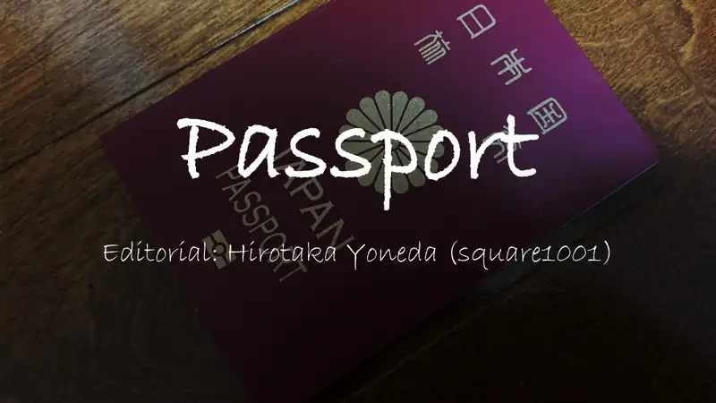
1Naslov; analiza: Yoneda Hirotaka (square1001). -
2Jeste li bili u inozemstvu? -
3Za to treba putovnica. -
4Putovnice ne otvaraju sve granice (slika iz članka o „najmoćnijim putovnicama”). -
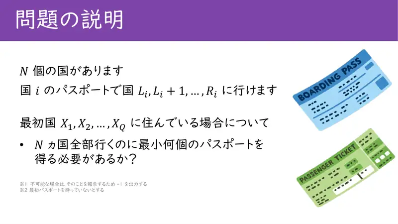
5Zadatak: $N$ zemalja; putovnica zemlje $i$ vodi u $L_i..R_i$; za početke $X_1..X_Q$ najmanji broj putovnica da se obiđu sve zemlje ($-1$ ako nemoguće; početno bez putovnice). -
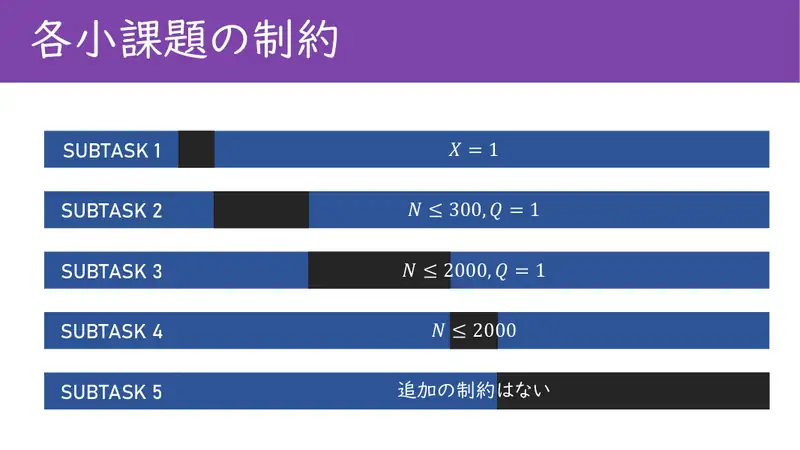
6Podzadaci: $X=1$; $N\le300, Q=1$; $N\le2000, Q=1$; $N\le2000$; bez ograničenja.
Podzadatak 1 6 bodova
-
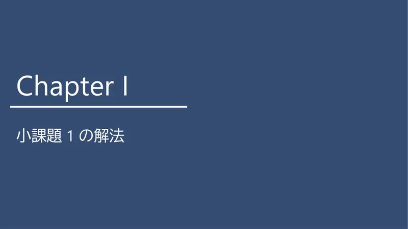
7Poglavlje I. -
8Preformulacija: minimizirati broj putovnica = što prije doći u stanje „putovnicama možemo ući u 1, 2, …, N” (korak = uzmi putovnicu, prijeđi). -
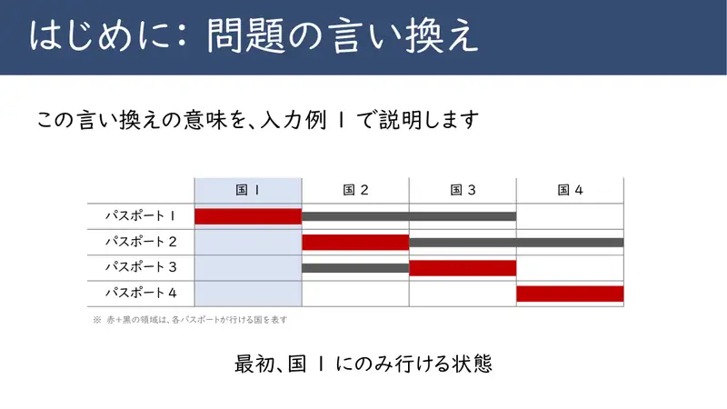
9Primjer 1: početno dosežna samo zemlja 1. Crveno+crno = doseg svake putovnice. -
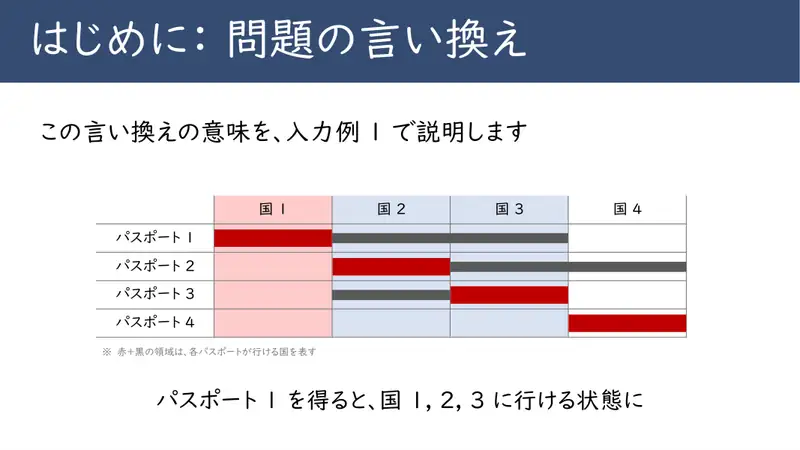
10S putovnicom 1: dosežne 1, 2, 3. -
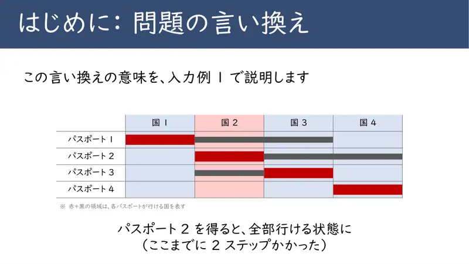
11S putovnicom 2: sve (2 koraka). -
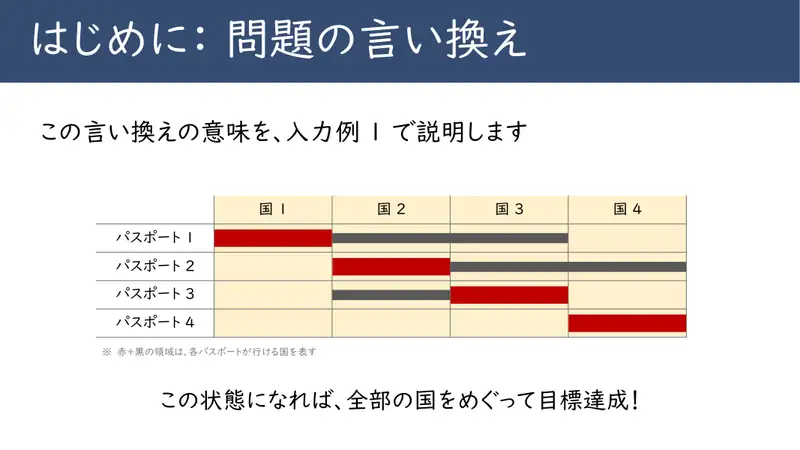
12Cilj postignut. -
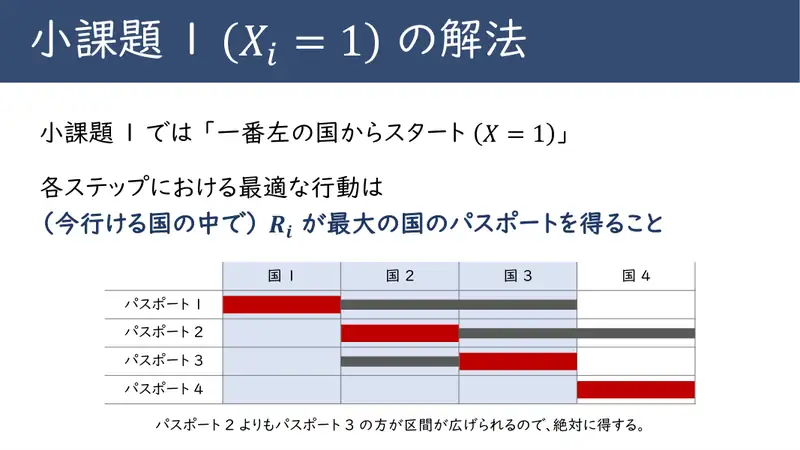
13$X=1$: u svakom koraku optimalno uzeti (u dosegu) putovnicu s najvećim $R_i$ — putovnica 3 proširuje više od 2, sigurno ne šteti. -
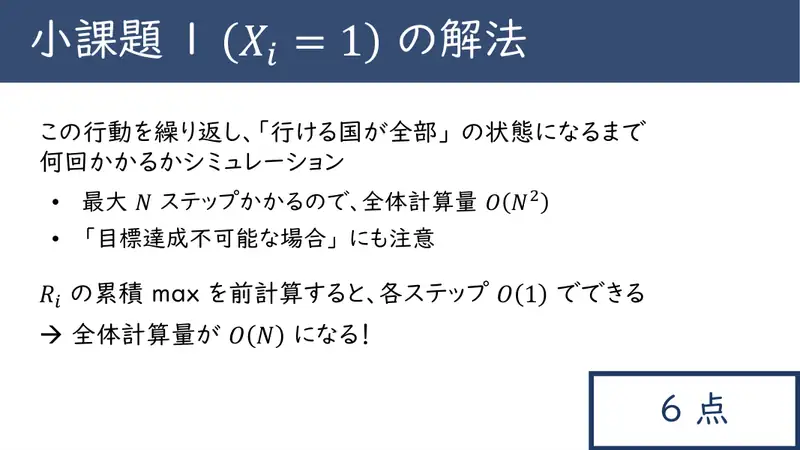
14Simulacija do „sve dosežno”: najviše $N$ koraka, $O(N^2)$; pazi na nemoguće. S prefiksnim maksimumom $R$: $O(N)$. -
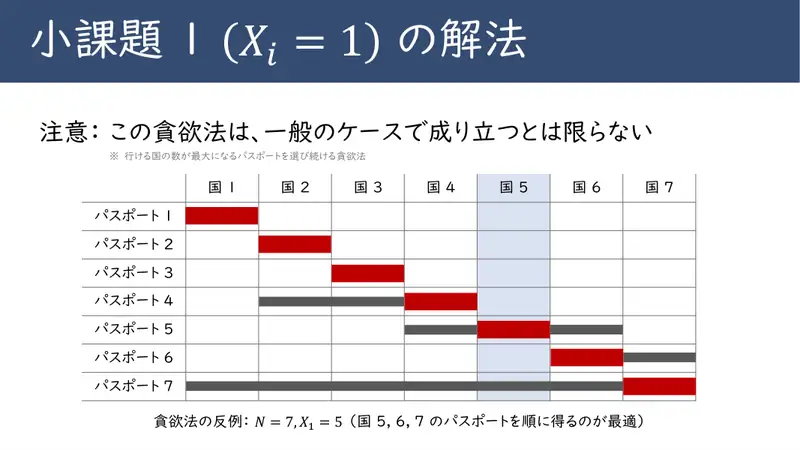
15Oprez: pohlepa ne vrijedi općenito. Protuprimjer $N=7$, $X_1=5$: optimalno je redom 5, 6, 7, dok „uvijek najveći doseg” griješi.
Podzadaci 2–4 48 bodova
-
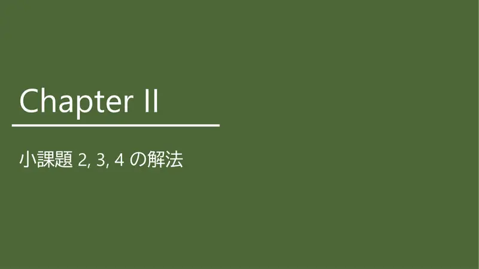
16Poglavlje II. -
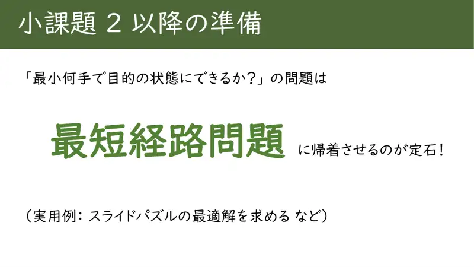
17„Najmanje poteza do ciljnog stanja” = najkraći put (kao slagalica). -
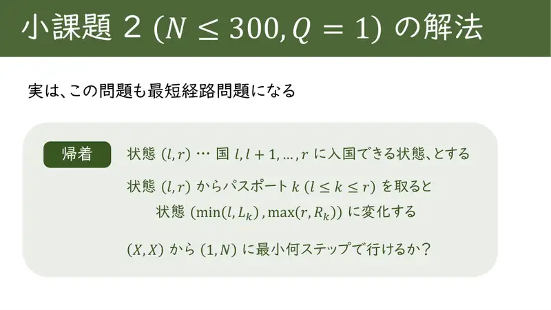
18Stanje $(l,r)$ = možemo ući u $l..r$. Putovnica $k\in[l,r]$: $(l,r)\to(\min(l,L_k), \max(r,R_k))$. Traži se udaljenost $(X,X)\to(1,N)$. -
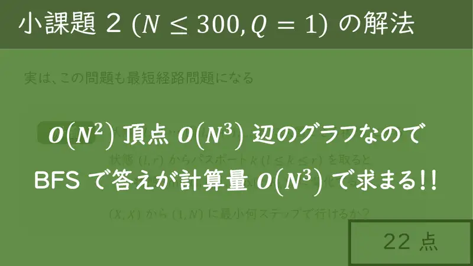
19$O(N^2)$ vrhova, $O(N^3)$ bridova — BFS, $O(N^3)$. 22 boda. -
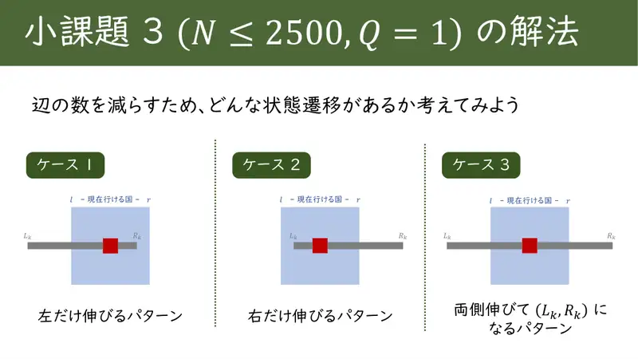
20Smanjimo bridove. Tri slučaja: širi se samo lijevo; samo desno; obje strane (postaje $[L_k,R_k]$). -
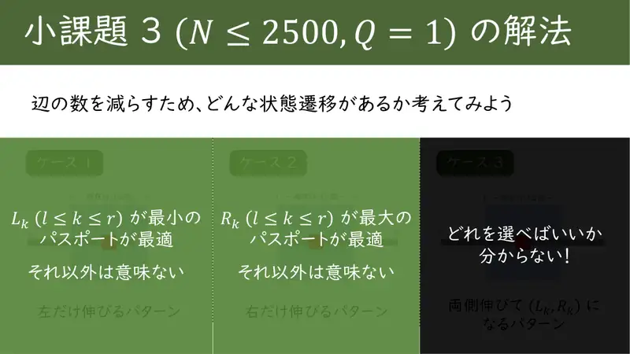
21Slučaj 1: optimalna je putovnica s minimalnim $L_k$; slučaj 2: s maksimalnim $R_k$. Slučaj 3: ne znamo koju! -
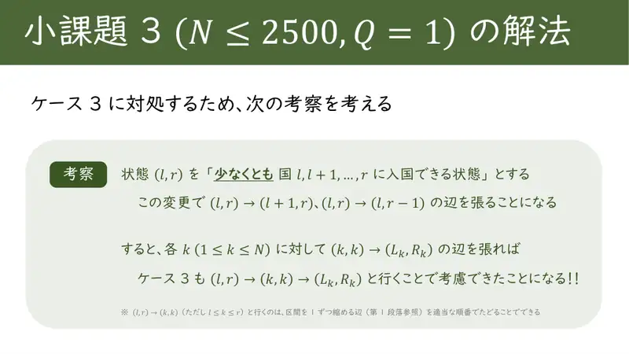
22Ideja: $(l,r)$ = „možemo ući barem u $l..r$”; dodaj bridove $(l,r)\to(l+1,r)$, $(l,r)\to(l,r-1)$. Uz $(k,k)\to(L_k,R_k)$ slučaj 3 postaje $(l,r)\to(k,k)\to(L_k,R_k)$ — skupljanje na $(k,k)$ nizom bridova smanjivanja. -
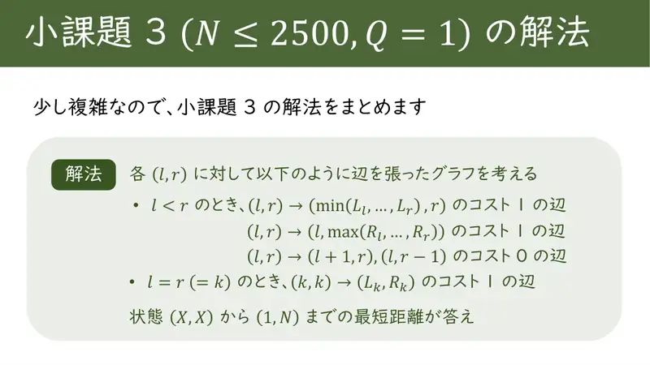
23Sažetak grafa: za $l \lt r$ bridovi cijene 1 u $(\min L, r)$ i $(l, \max R)$, cijene 0 u $(l+1,r)$, $(l,r-1)$; za $l=r=k$ brid u $(L_k,R_k)$. -
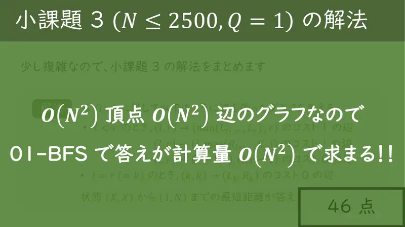
24$O(N^2)$ vrhova i bridova: 01-BFS u $O(N^2)$. 46 bodova. -
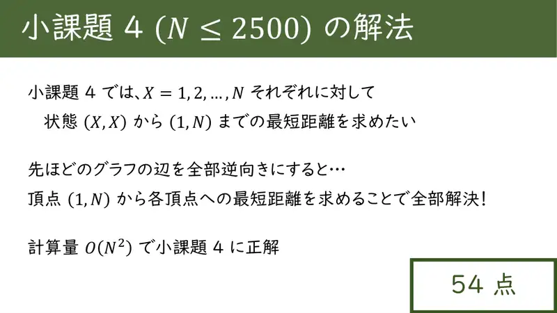
25Podzadatak 4: obrni sve bridove i računaj udaljenosti od $(1,N)$ do svih $(X,X)$ — $O(N^2)$ za sve upite. 54 boda.
Puni bodovi 46 bodova
-
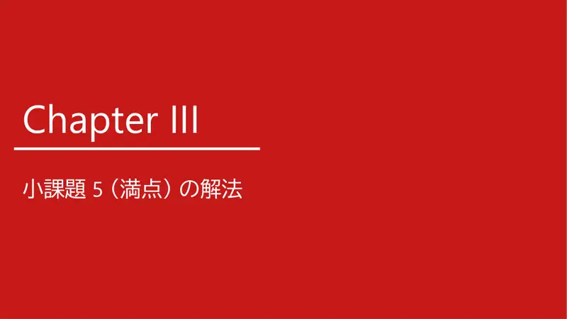
26Poglavlje III. -
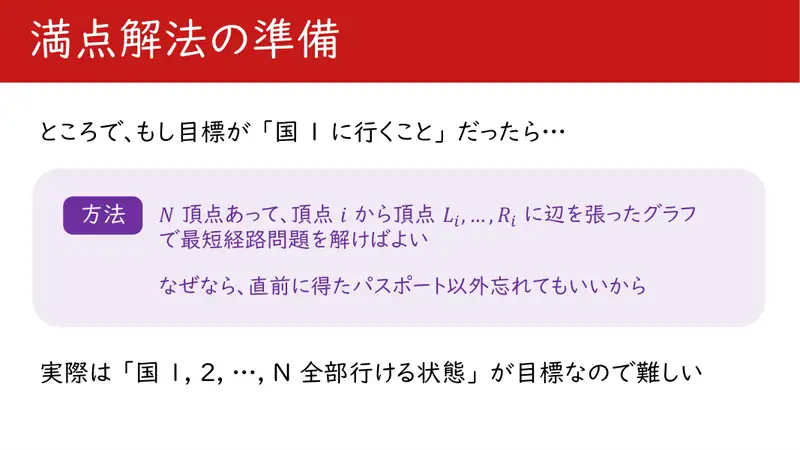
27Kad bi cilj bio „ući u zemlju 1”: graf s $N$ vrhova, $i \to L_i..R_i$, najkraći put — smijemo zaboraviti sve osim zadnje putovnice. Pravi cilj je teži. -
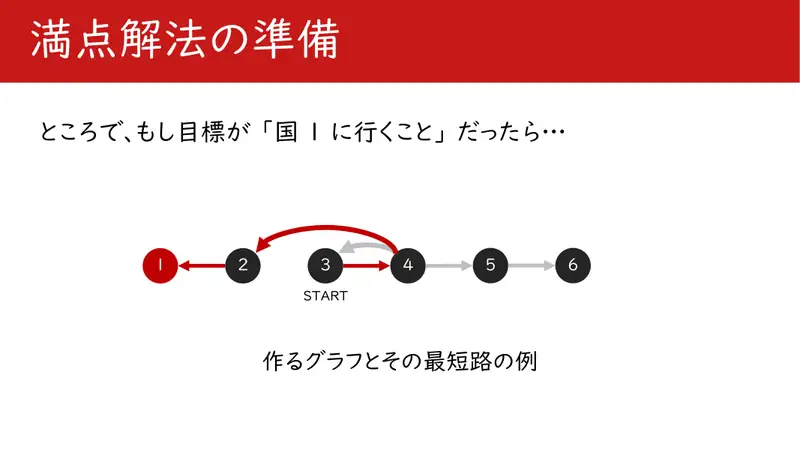
28Primjer grafa i najkraćeg puta. -
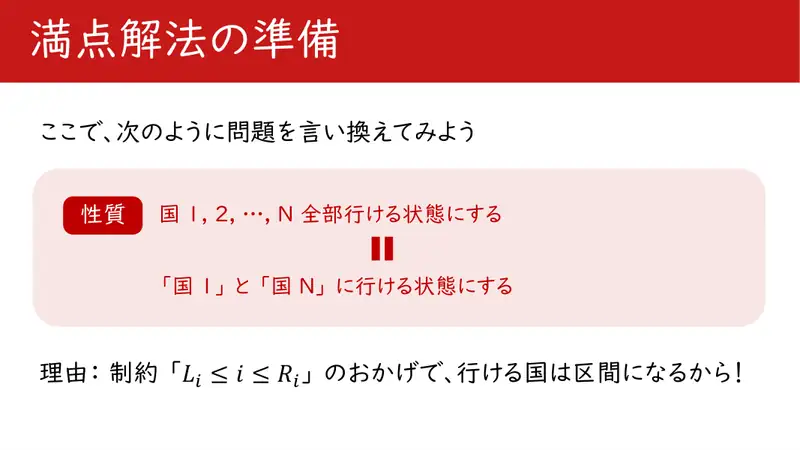
29Preformulacija: „sve zemlje” $\iff$ „možemo ući u 1 i u $N$” — doseg je interval zbog $L_i\le i\le R_i$. -
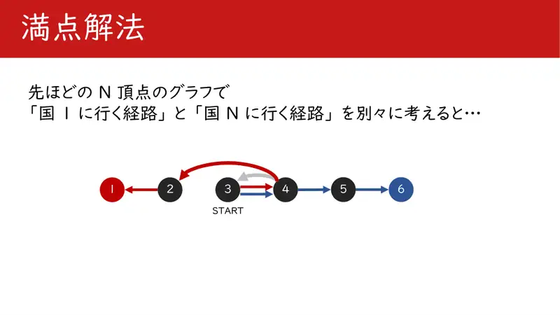
30Odvojeno gledaj put do 1 i put do $N$… -
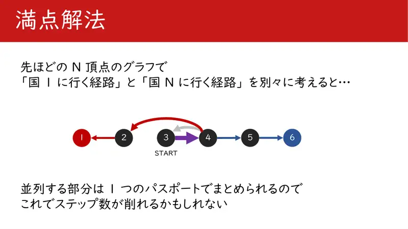
31…paralelni dio pokriva jedna putovnica, pa se koraci štede. -
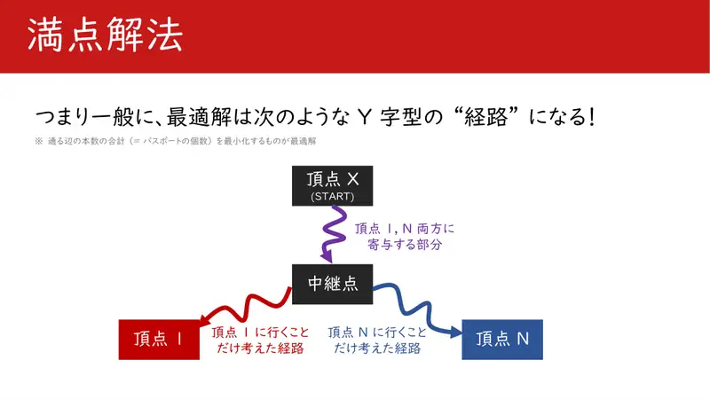
32Općenito je optimum Y-oblika: deblo $X\to$ relej, grana do 1, grana do $N$; minimiziramo ukupan broj bridova (= putovnica). -
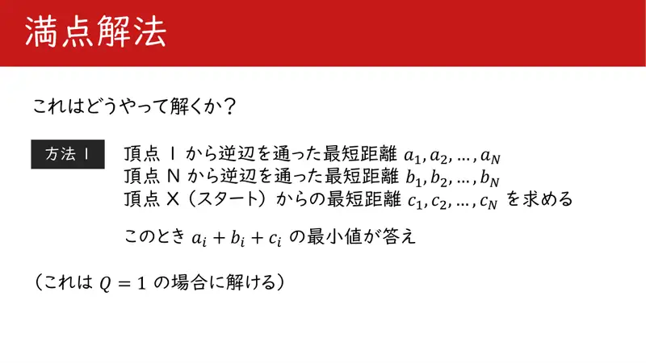
33Metoda 1: $a_i$ = udaljenost od 1 obrnutim bridovima, $b_i$ od $N$, $c_i$ od $X$; odgovor $\min(a_i+b_i+c_i)$. (Za $Q=1$.) -
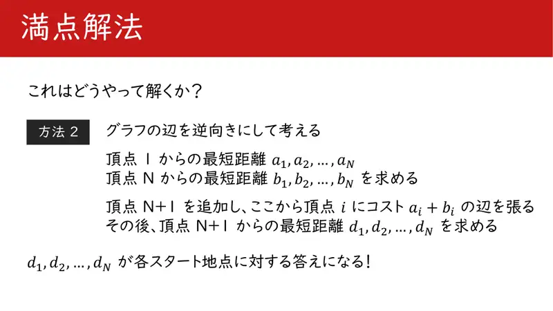
34Metoda 2: obrni bridove; dodaj vrh $N+1$ s bridovima cijene $a_i+b_i$ u $i$; udaljenosti $d_i$ od $N+1$ su odgovori za sve početke. -
35$O(N^2)$ — može li bolje?
-
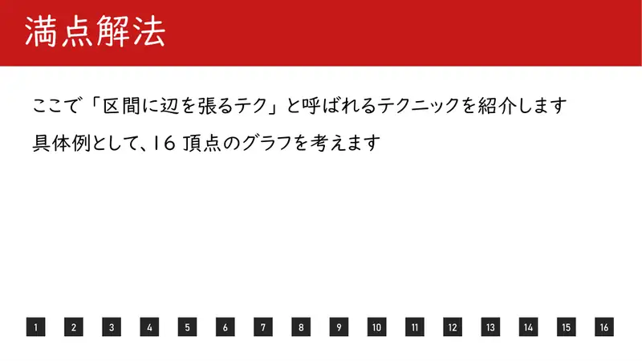
36Primjer s 16 vrhova. -
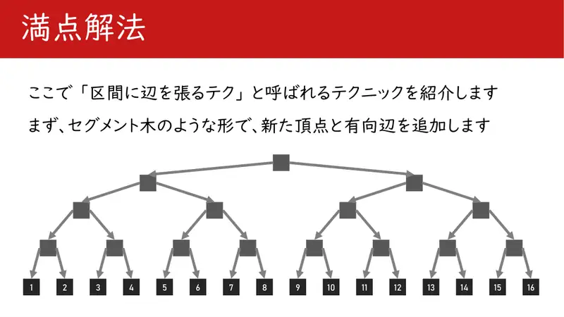
37Dodaj vrhove i usmjerene bridove u obliku segmentnog stabla. -
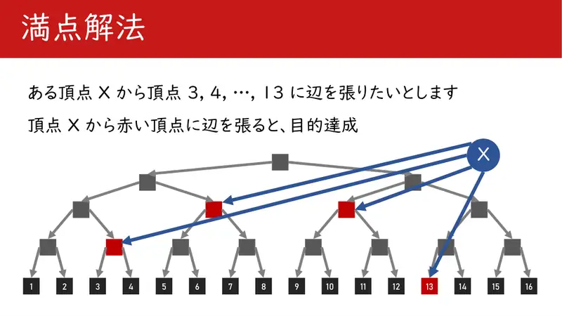
38Želimo bridove iz $X$ u $3..13$: povuci bridove u crvene čvorove. -
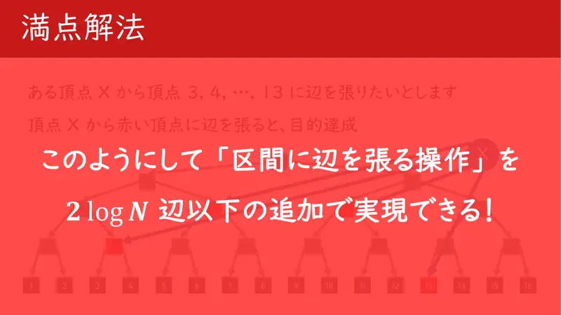
39„Brid na interval” ostvaren s $\le 2\log N$ bridova. -
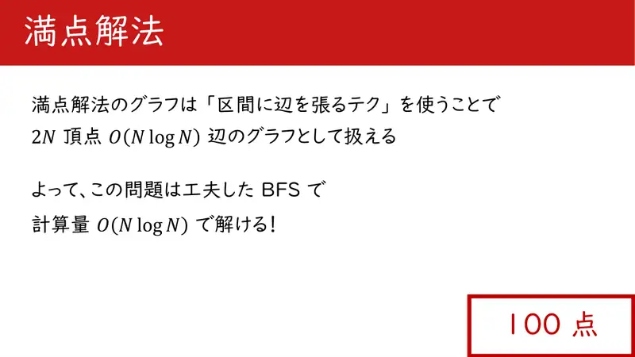
40Graf rješenja ima $2N$ vrhova i $O(N\log N)$ bridova; prilagođeni BFS u $O(N\log N)$. 100 bodova.
-
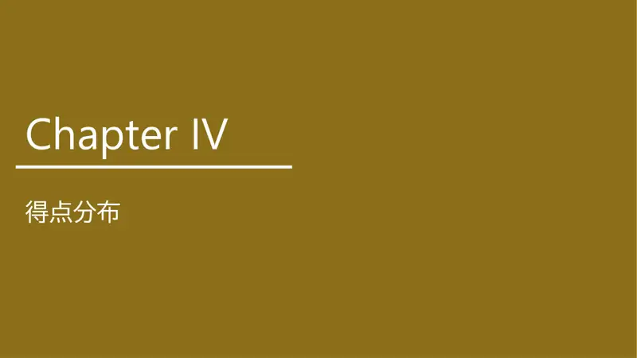
41Poglavlje IV. -
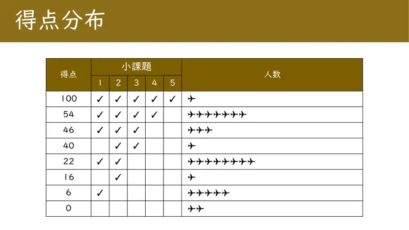
42Raspodjela bodova: 100 (1), 54 (7), 46 (3), 40 (1), 22 (8), 16 (1), 6 (5), 0 (2).
Sažetak
- Doseg je interval; cilj je držati putovnice koje pokrivaju 1 i $N$.
- Optimum je Y-oblika: $\min_m (a_m + b_m + c_m) - 1$ uz $a_1 = b_N = 1$.
- Obrnuti graf + super-izvor s težinama $a_m+b_m$ daje sve početke jednim prolazom; segmentno stablo kao graf → $O(N\log N)$.